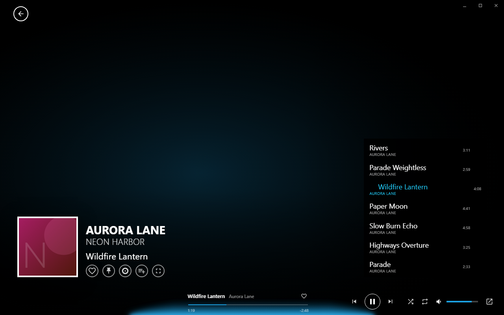

bring back zune
a music player for your own Jellyfin or Navidrome server, drawn the way the Zune software used to look. black canvas, big light type, one colour that is yours. Windows and Linux.

tour
the little things
- smart djstart from an artist, an album, a song, or your likes. artists you keep skipping drift out of the mix.
- mixviewrelated artists around the one you are on, with a trail so you can go back.
- liked songsthe heart next to a song likes it on your server. one tab lists them all.
- playlistssave the queue, or build one by clicking or dragging songs in from your likes, a search or what is playing.
- classic layoutartists, albums and songs side by side, like the original. switch in settings.
- mini playera small always-on-top window with the cover, the next few songs and the controls.
- media keysplay, pause, next and previous from your keyboard, the Windows media overlay, or MPRIS on Linux.
- your coloureight accent colours. it drives the highlights, the glow and the tint on Now Playing.
privacy
- it talks only to the servers you add. no account, no analytics, no telemetry.
- your password signs you in once and is never stored. only an access token (or, for Navidrome, a salted hash) is kept, in a file only you can read.
- related artists and recommendations come from your own server. the app calls no outside service.
- covers you change, and what Smart DJ learns from your skips, stay in a settings file on your computer.
questions
what do I need?
a Jellyfin server, or a Navidrome (or other Subsonic) server, and the address, username and password for it. no server yet? the demo library lets you look around offline.
is it from Microsoft?
no. it is an independent fan project, not affiliated with or endorsed by Microsoft, and it uses none of their assets. Zune is a trademark of Microsoft Corporation.
which systems?
Windows (installer or portable exe) and Linux (AppImage or deb). built with Electron, so macOS would likely work from source, but it is not tested.
mixview is mostly empty for some artists.
related artists come from your server. Jellyfin uses its own data; Navidrome needs Last.fm (or similar) set up on the server. without it you still get that artist’s albums.
does smart dj analyse my music?
no. it asks your server for similar songs, then leaves out artists you keep skipping. a streaming server does not hand over tempo or loudness, so it does not try to match on those.
my self-signed certificate is rejected.
tick “trust a self-signed certificate for this server” when you add it. it only trusts that one host.
something looks empty. what do I check?
run npm run probe -- jellyfin http://host:8096 user pass (or navidrome). it tries every call the app makes and prints pass or fail for each.